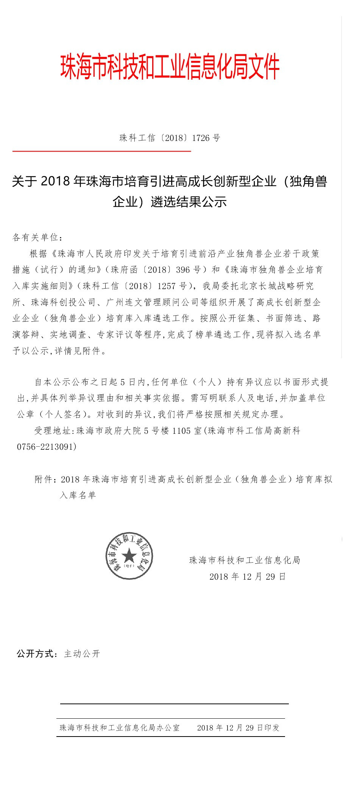

发布日期：2018-12-29
根据《珠海市人民政府印发关于培育引进前沿产业独角兽企业若干政策措施实施（试行）的通知》（珠府函[2018]396号）和《珠海市独角兽企业培育入库实施细则》（珠科工信局[2018]1257号），珠海市科技和工业信息化局委托北京长城战略研究所、珠海科创投公司、广州连文管理顾问公司等组织开展了高成长创新型企业企业（独角兽企业）培育库入库遴选工作。按照公开征集、书面筛选、路演答辩、实地调查、专家评议等程序，现德百祺成功入选2018年珠海市培育引进高成长创新企业（独角兽企业）培育库并列为种子企业。
查看全文根据《珠海市人民政府印发关于培育引进前沿产业独角兽企业若干政策措施实施（试行）的通知》（珠府函[2018]396号）和《珠海市独角兽企业培育入库实施细则》（珠科工信局[2018]1257号），珠海市科技和工业信息化局委托北京长城战略研究所、珠海科创投公司、广州连文管理顾问公司等组织开展了高成长创新型企业企业（独角兽企业）培育库入库遴选工作。按照公开征集、书面筛选、路演答辩、实地调查、专家评议等程序，现德百祺成功入选2018年珠海市培育引进高成长创新企业（独角兽企业）培育库并列为种子企业。
